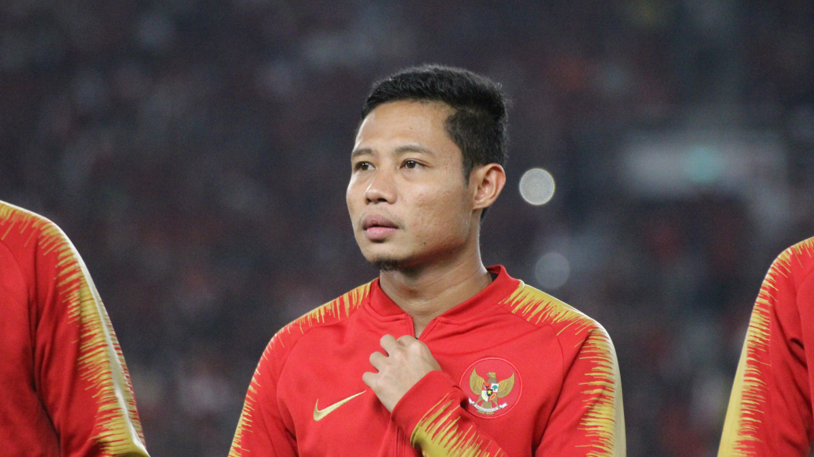
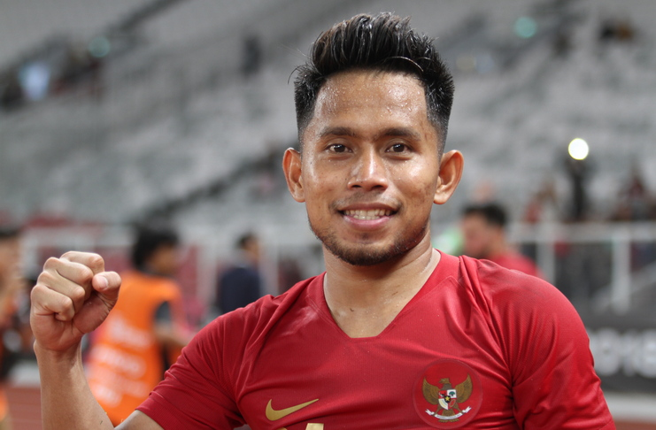
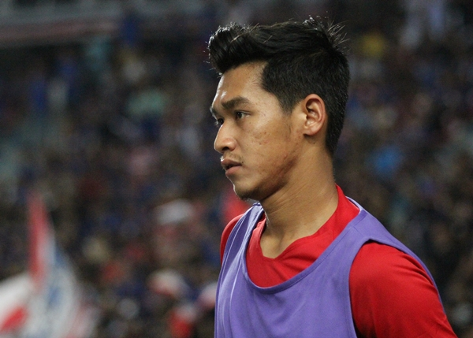
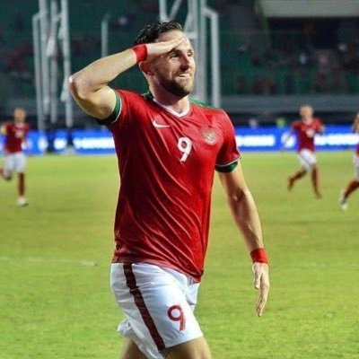

Profile Evan Dimas
Evan Dimas Darmono (lahir di Surabaya, 13 Maret 1995; umur 25 tahun) adalah pemain sepak bola profesional Indonesia yang bermain pada posisi gelandang. Evan Dimas sukses membawa Timnas Indonesia U-19 menjuarai Kejuaraan Remaja U-19 AFF 2013 dengan mengalahkan Vietnam di partai puncak. Baca Selengkapnya >>>

Profile Andik Vermansah
Tekad bulat Andik Vermansah menjadi pemain sepakbola ditunjukkan sejak kecil. Andik saat ini, pada 2016, bermain di Selangor FA Malaysia. Ia dapat bermain di berbagai posisi seperti pemain sayap dan penyerang. Pria kelahiran Jember, 23 November 1991, ini merupakan salah satu pemain terbaik Indonesia. Baca Selengkapnya >>>

Profile Septian David Maulana
Septian David Maulana (lahir di Semarang, Jawa Tengah, 01 September 1996; umur 23 tahun) adalah pemain sepak bola Indonesia yang saat ini bermain untuk PSIS Semarang dan berposisi sebagai penyerang. ... Ia juga adalah bagian dari skuat Indonesia U-19 dan sukses meloloskan Indonesia U-19 di ajang Kejuaraan U-19 AFC 2014. Baca Selengkapnya >>>
